VM-RAID-Minikube
Steps:
Create virtual machine with debian/ubuntu/centos or download preinstalled image (https://www.osboxes.org/).
Add simple raid1 to virtual machine: *nix os system on 1-st hdd, 2d and 3d hdds are in raid1. 1 (with star). Only two hdds. Os system on raid1, based on this two hdd.
How to test raid1. Create file on raid1 file system. Turn off vm and remove one of the hhds from vm. Turn on vm. File should be accessible.
Add new hdd and sync it to raid1.
Add section with assignment1 description into docx and send by e-mail for checking.
PROCEDURE
Install an Ubuntu Server 20.04 virtual machine using Virtual Box and add two additional HDDs to the VM:
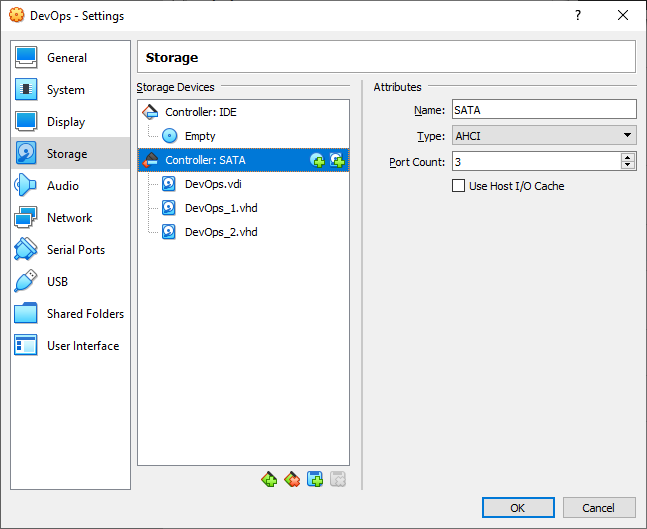{kind=link}
Establish the connection from Windows to the VM with SSH in PowerShell as shown on the picture below:
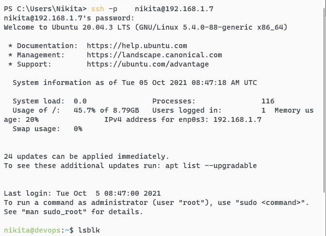{kind=link}
List all the disks of the VM using the lsblk command: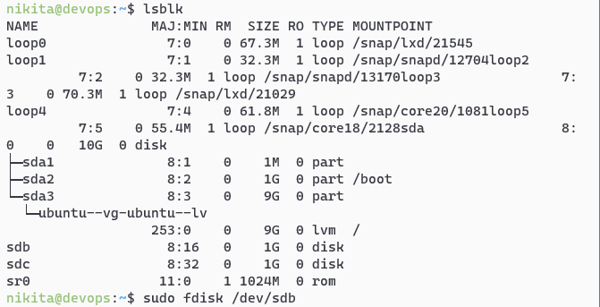
{kind=link}
Create RAID1 based on sdb and sdc. In order to do that, create two primary partitions sdb1 and sdc1 respectively with the fdisk utility program:
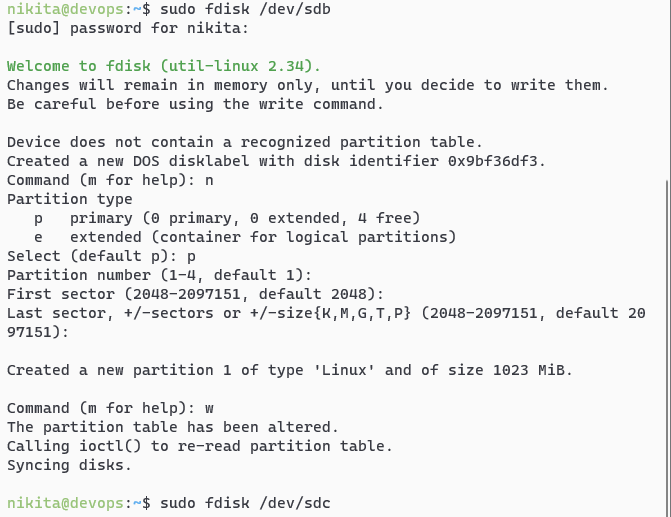 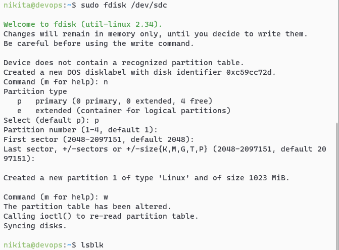{kind=link}
{kind=link}
Check for creation success:
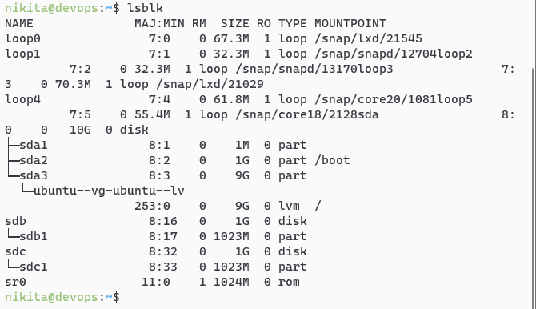{kind=link}
The two partitions created successfully.
Create a RAID1 array in /dev/md0 based on the created partitions using the mdadm command:
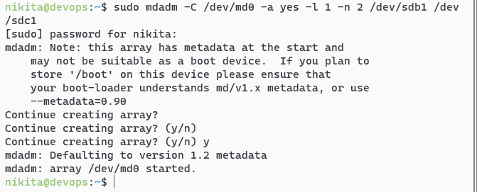{kind=link}
Create a file system based on RAID1:
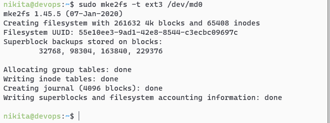{kind=link}
Mount the file system:
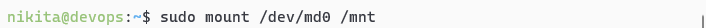{kind=link}
Check for success:
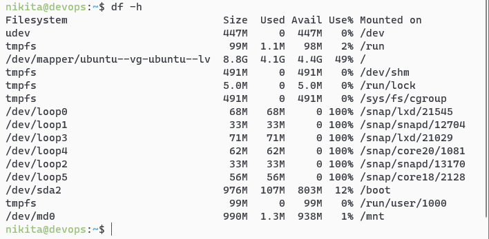{kind=link}
Save the created partitions to mount them automatically each time the system boots. In order to do that, get the UUID of the RAID1 array:
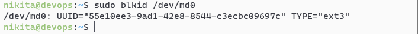{kind=link}
Then edit the /etc/fstab file containing the boot information and paste the UUID in there with corresponding options:
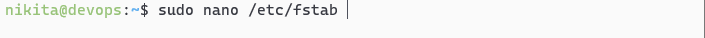{kind=link}
Display the edited file:
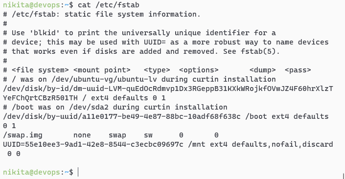{kind=link}
Test RAID1. In order to do that, add a test file in the /mnt directory as shown on the picture below:
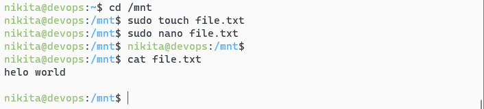{kind=link}
Then remove sdc1 from RAID1 and check if the file is left: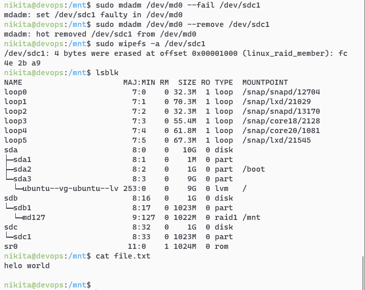
{kind=link}
The file left unaffected.
Turn off the VM and remove one of the disks:
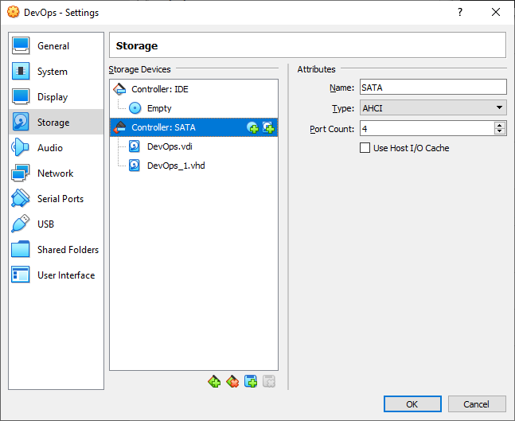{kind=link}
Turn the VM back on and display its disks to check if sdc completely removed but the file still left unaffected:
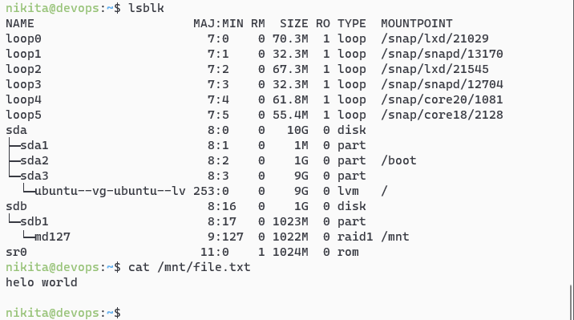{kind=link}
Turn the VM off and add a new HDD to it:
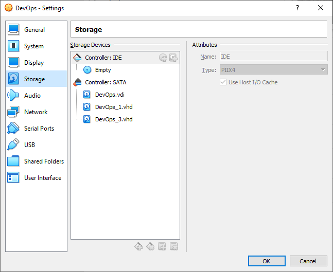{kind=link}
Turn the VM back on and display its disks:
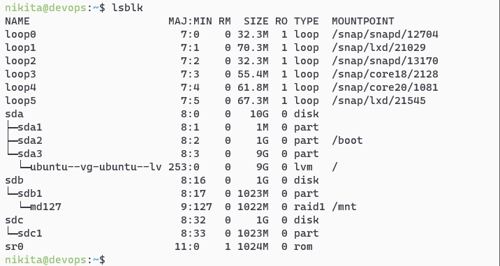{kind=link}
The new HDD detected but not added to RAID. Add it with the following command and check for success:
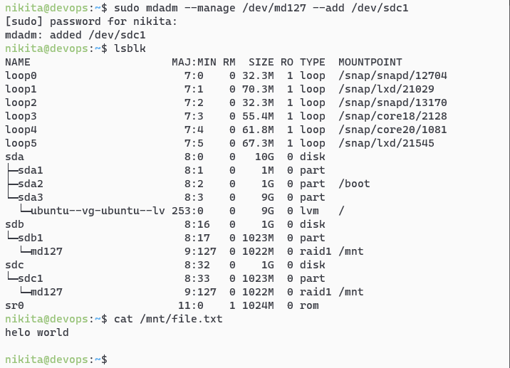{kind=link}
The test file still left unaffected.
CONCLUSION
In the conclusion of the laboratory work, the basic utilities of the Ubuntu system studied for working with the file system, partitioning and creating RAID arrays; all steps completed successfully.